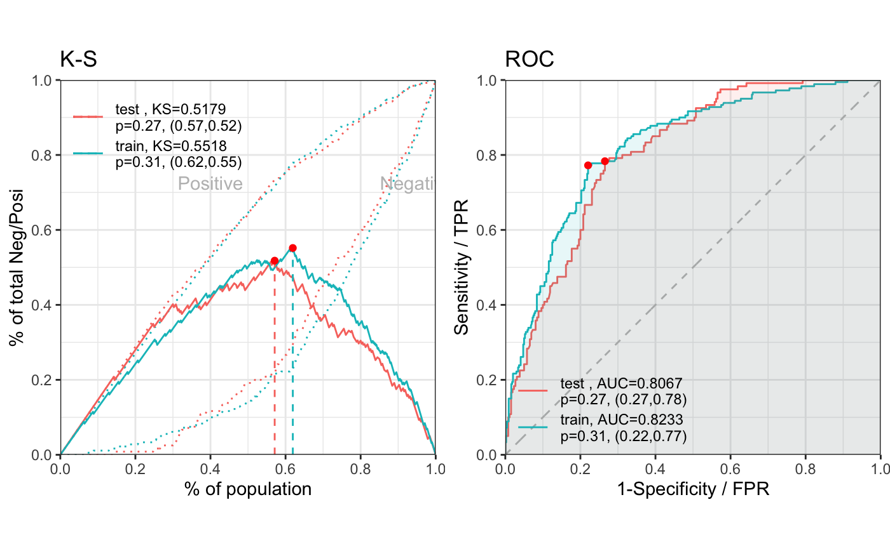
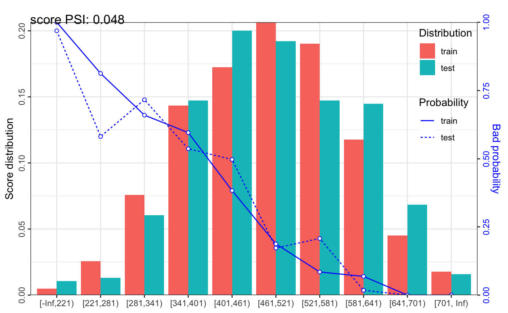

vignettes/demo.Rmd
demo.RmdAfter installing scorecard via instructions in the README section, load the package into your environment.
library(scorecard)
Let’s use the germancredit dataset for the purposes of this demonstration.
data("germancredit") str(germancredit) #> 'data.frame': 1000 obs. of 21 variables: #> $ status.of.existing.checking.account : Factor w/ 4 levels "... < 0 DM","0 <= ... < 200 DM",..: 1 2 4 1 1 4 4 2 4 2 ... #> $ duration.in.month : num 6 48 12 42 24 36 24 36 12 30 ... #> $ credit.history : Factor w/ 5 levels "no credits taken/ all credits paid back duly",..: 5 3 5 3 4 3 3 3 3 5 ... #> $ purpose : chr "radio/television" "radio/television" "education" "furniture/equipment" ... #> $ credit.amount : num 1169 5951 2096 7882 4870 ... #> $ savings.account.and.bonds : Factor w/ 5 levels "... < 100 DM",..: 5 1 1 1 1 5 3 1 4 1 ... #> $ present.employment.since : Factor w/ 5 levels "unemployed","... < 1 year",..: 5 3 4 4 3 3 5 3 4 1 ... #> $ installment.rate.in.percentage.of.disposable.income : num 4 2 2 2 3 2 3 2 2 4 ... #> $ personal.status.and.sex : Factor w/ 5 levels "male : divorced/separated",..: 1 1 1 1 1 1 1 1 1 1 ... #> $ other.debtors.or.guarantors : Factor w/ 3 levels "none","co-applicant",..: 1 1 1 3 1 1 1 1 1 1 ... #> $ present.residence.since : num 4 2 3 4 4 4 4 2 4 2 ... #> $ property : Factor w/ 4 levels "real estate",..: 1 1 1 2 4 4 2 3 1 3 ... #> $ age.in.years : num 67 22 49 45 53 35 53 35 61 28 ... #> $ other.installment.plans : Factor w/ 3 levels "bank","stores",..: 3 3 3 3 3 3 3 3 3 3 ... #> $ housing : Factor w/ 3 levels "rent","own","for free": 2 2 2 3 3 3 2 1 2 2 ... #> $ number.of.existing.credits.at.this.bank : num 2 1 1 1 2 1 1 1 1 2 ... #> $ job : Factor w/ 4 levels "unemployed/ unskilled - non-resident",..: 3 3 2 3 3 2 3 4 2 4 ... #> $ number.of.people.being.liable.to.provide.maintenance.for: num 1 1 2 2 2 2 1 1 1 1 ... #> $ telephone : Factor w/ 2 levels "none","yes, registered under the customers name": 2 1 1 1 1 2 1 2 1 1 ... #> $ foreign.worker : Factor w/ 2 levels "yes","no": 1 1 1 1 1 1 1 1 1 1 ... #> $ creditability : Factor w/ 2 levels "bad","good": 2 1 2 2 1 2 2 2 2 1 ...
The var_filter function drops column variables that don’t meet the thresholds for missing rate (> 95% by default), information value (IV) (< 0.02 by default), or identical value rate (> 95% by default).
dt_f <- var_filter(germancredit, y = "creditability") #> [INFO] filtering variables ...
When building scorecard models, a subset of the observations should be held out from the data used to train the model (similar to most other traditional modeling approaches), and instead be apportioned to the test set. We can perform this sampling to create the train and test datasets using the split_df function.
Weight-of-Evidence binning is a technique for binning both continuous and categorical independent variables in a way that provides the most robust bifurcation of the data against the dependent variable. This technique can be easily executed across all independent variables using the woebin function.
bins <- woebin(dt_f, y = "creditability") #> [INFO] creating woe binning ... # woebin_plot(bins)
The user can also adjust bin breaks interactively by using the woebin_adj function.
# breaks_adj <- woebin_adj(dt_f, y = "creditability", bins = bins)
Furthermore, the user can set the bin breaks manually via the breaks_list = list() argument in the woebin function. Note the use of %,% as a separator to create a single bin from two classes in a categorical independent variable.
breaks_adj <- list( age.in.years = c(26, 35, 40), other.debtors.or.guarantors = c("none", "co-applicant%,%guarantor") ) bins_adj <- woebin(dt_f, y = "creditability", breaks_list = breaks_adj) #> [INFO] creating woe binning ... #> Warning in check_breaks_list(breaks_list, xs): There are 11 x variables that are #> not specified in breaks_list, and instead are using optimal binning.
Once your WoE bins are established for all desired independent variables, apply the binning logic to the training and test datasets.
dt_woe_list <- lapply(dt_list, function(x) woebin_ply(x, bins_adj)) #> [INFO] converting into woe values ... #> [INFO] converting into woe values ...
Logistic regression can often be leveraged effectively to assist in building the scorecards.
m1 <- glm( creditability ~ ., family = binomial(), data = dt_woe_list$train) # vif(m1, merge_coef = TRUE) # summary(m1) # Select a formula-based model by AIC (or by LASSO for large dataset) m_step <- step(m1, direction = "both", trace = FALSE) m2 <- eval(m_step$call) # vif(m2, merge_coef = TRUE) # summary(m2)
If oversampling is a concern, the following code chunk could be uncommented and run to help adjust for this issue.
# Read documentation on handling oversampling (support.sas.com/kb/22/601.html)
# library(data.table)
# p1 <- 0.03 # bad probability in population
# r1 <- 0.3 # bad probability in sample dataset
# dt_woe <- copy(dt_woe_list$train)[, weight := ifelse(creditability == 1, p1/r1, (1-p1)/(1-r1) )][]
# fmla <- as.formula(paste("creditability ~", paste(names(coef(m2))[-1], collapse = "+")))
# m3 <- glm(fmla, family = binomial(), data = dt_woe, weights = weight)The perf_eva function provides model accuracy statistics (such as mse, rmse, logloss, r2, ks, auc, gini) and plots (such as ks, lift, gain, roc, lz, pr, f1, density).
# First, get probabalistic predictions pred_list <- lapply(dt_woe_list, function(x) predict(m2, x, type = 'response')) # Then evaluate model accuracy perf <- perf_eva(pred = pred_list, label = label_list) #> [INFO] The threshold of confusion matrix is 0.3098.

Once the model has been selected, scorecards can be created via the scorecard function. Note that the default target points is 600, target odds is 1/19 and points to double the odds is 50. See ?scorecard for more information on the function and its arguments.
The scorecard can then be applied to the original data using the scorecard_ply function. Lastly, a chart encompassing Population Stability Index (PSI) statistics can be rendered via the perf_psi function.
# Build the card card <- scorecard(bins_adj, m2) # Obtain Credit Scores score_list <- lapply(dt_list, function(x) scorecard_ply(x, card)) # Analyze the PSI perf_psi(score = score_list, label = label_list) #> $pic #> $pic$score

#>
#>
#> $psi
#> variable dataset psi
#> 1: score train_test 0.048007